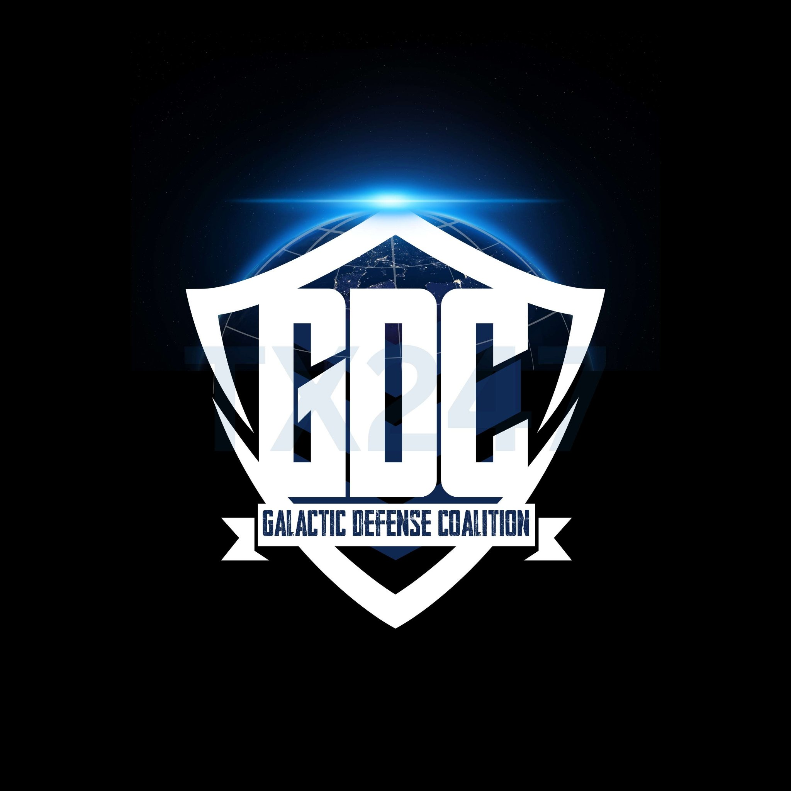
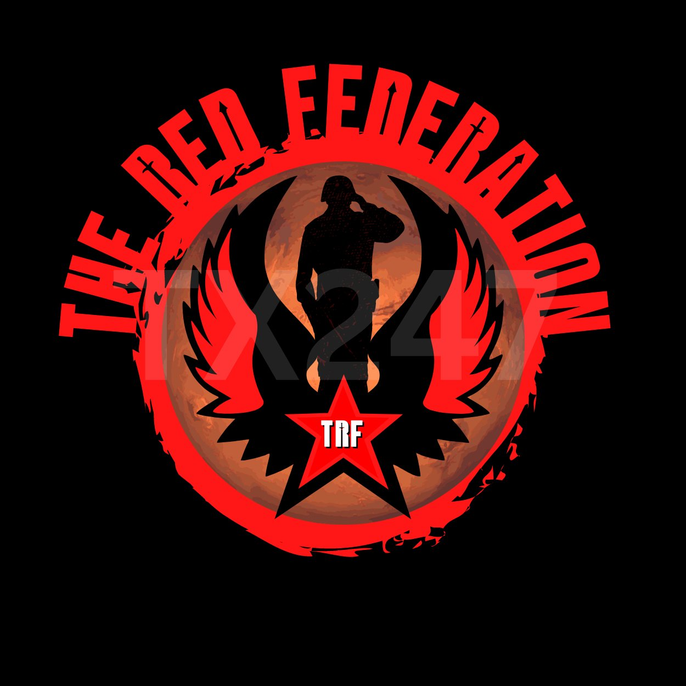
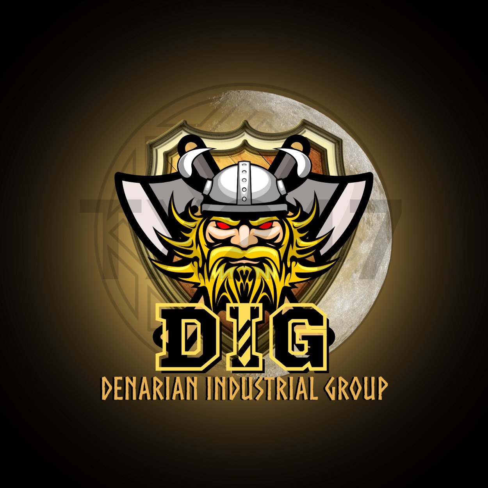
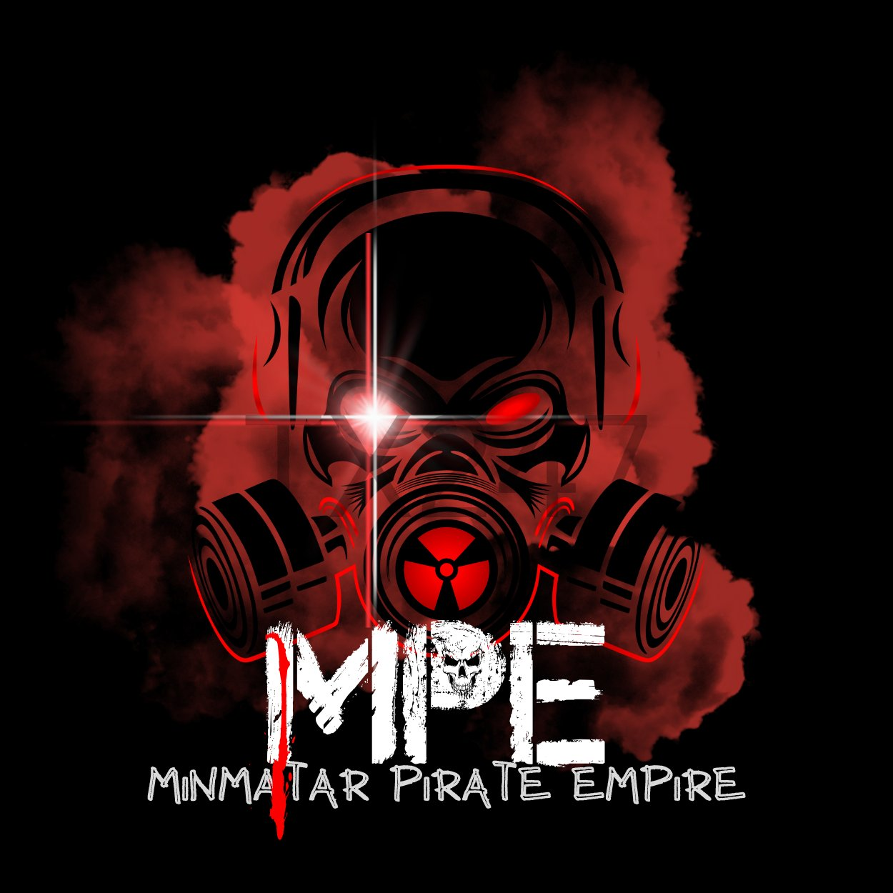

You join a faction in game, at the Faction screen — and there is no changing sides, so choose like you mean it. Flying independent? You start neutral with all four — your actions move your standing from there.

PvPvE · The Law Territory: Earth Orbit — Protected Space
"THE LINE HOLDS." The Coalition is Earth's shield and the law of Protected Space: patrols, ports, and the Fighter Corps that answers when you call for help. GDC pilots fly police work — escorts, warrants, bounties, and the defense of everyone just trying to build in peace.
Perks of the gold: Earth orbit is GDC Protected Space — no lawful weapons fire, patrols on watch, distress response. PvP for GDC is duty only: warrants, bounties, sanctioned wars. Priority docking at Coalition ports.

PvPvE · The Exiles Territory: Pertam — The Frontier
"TOGETHER WE FIGHT, TOGETHER WE PROSPER." Exiled from Earth and dumped on Pertam, the Federation did not die in the dust — it got organized. The Red is a frontier power: miners, soldiers, and shipwrights who answer to no Earth admiral and bow to no pirate toll.
Perks of the red: Pertam salvage rights, escort priority on frontier runs, and a family that fights for its own — frontier raids and wars are the Red way of life.

PvE · The Miners Territory: Claims & Convoys — Everywhere Ore Moves
"BE A MINER, BE A LEGEND, BE THE FUTURE." Founded 2199, the Group moves the ore that moves the galaxy: convoys, claims, refineries, and the best-paid contracts in TX247 space. DIG does not start wars — DIG ends shortages.
Perks of the yellow: DIG members fly protected — they can't be lawfully attacked. The one exception: take a frontier convoy contract and a risk window opens for that run. Convoy contracts pay first and best to Group crews, and DIG sells the full mined catalog to everyone.

PvP · The Pirates Territory: Deep Space — The Anchorage
"NO RULES, NO MERCY, NO STOPPING." The Empire is the toll every trader fears and the freedom every outlaw dreams of: take what you can hold, answer to no law, and fly under a flag that marks you a target in every sky, at all times — forever. That is the price. The Anchorage, the fences, and the whole frontier are the payoff.
Perks of the black: permanently flagged means the hunt never stops — in either direction. Toll immunity among your own, access to the Anchorage, and fences that buy anything, no questions asked. In GDC space, you're wanted on sight.
Connect at 191.101.30.133:29016 — PC, Xbox or PlayStation. See How It Works for the console steps.
Open the Faction screen in game and join GDC, TRF, DIG or MPE directly — or stay independent and neutral with all four. Discord onboarding asks the same question so your roles match your flag.
There is no changing sides. Your standing with each power moves by your actions — trade, contracts, salvage, and who you shoot at.
No flag, no protection, no obligations. You start at neutral (0) standing with all four factions, and the frontier decides what you become.